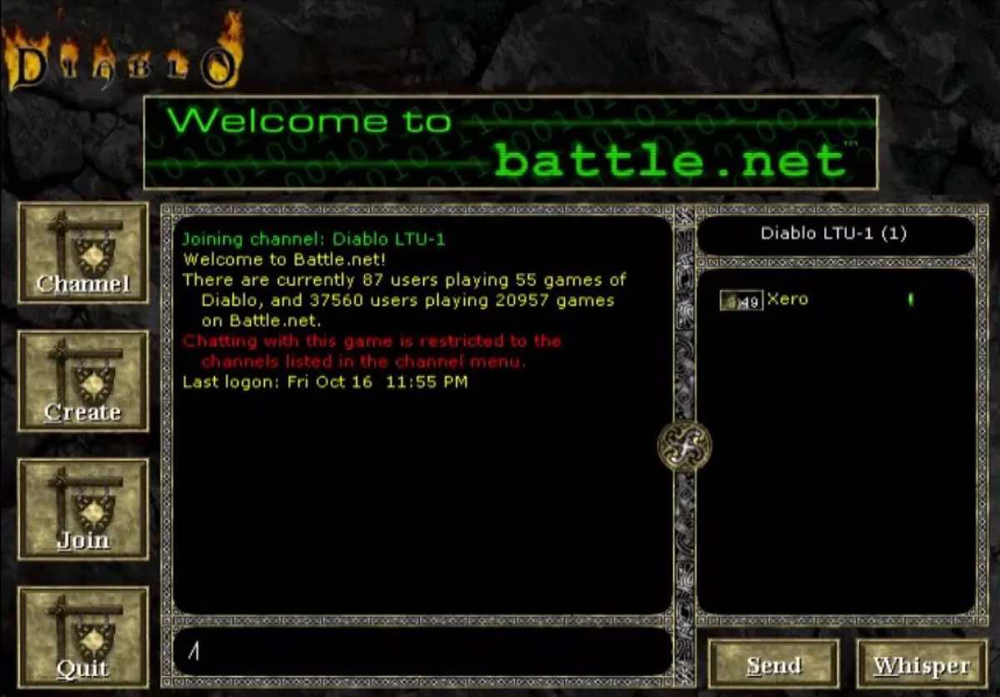

The original Battle.net homepage from 1996
Blizzard designed Battle.net as a free, simple, community-oriented and driven platform. On November 30, 1996, Battle.net launched with the Diablo, giving players an option to log into an online ecosystem with one click. This removed the need for figuring out IPs and modem numbers, configuring ports, network driver software, or running additional software, by placing all multiplayer features inside the game itself.
Battle.net introduced chat lobbies, game specific rooms, clan spaces, and a match finder for active games. This unification of matchmaking and communication in one place made gaming easier and accessible. The system used a centralized login servers system, item and character verification for Diablo to reduce cheating and counter hacks and dupes, and a lobby to game session feature that gave players a consistent experience in matchmaking. The platform grew quickly with more than one million users had logged into Battle.net by 1997. The platform expanded with support for StarCraft, Brood War, and Warcraft II Battle.net Edition by 1998. Since StarCraft was massively popular, Battle.net also became more popular since it was competitive and had an explosion of clans that utilized its chat features. Because of this, Battle.net turned into a whole new social ecosystem.